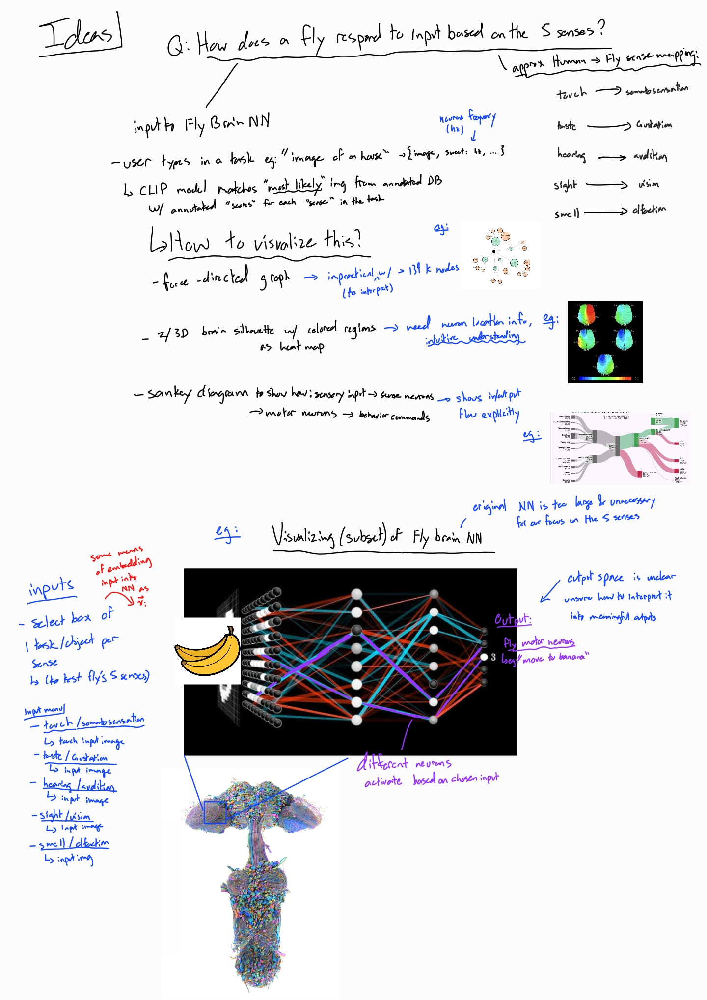
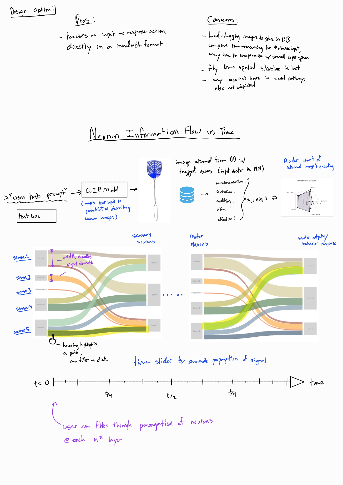
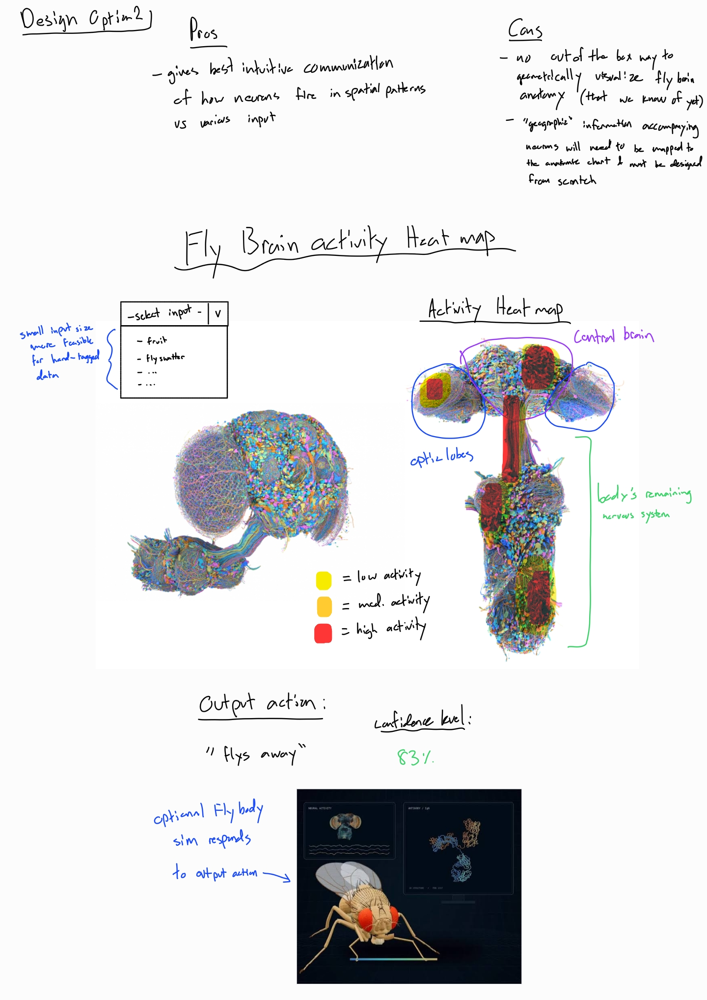
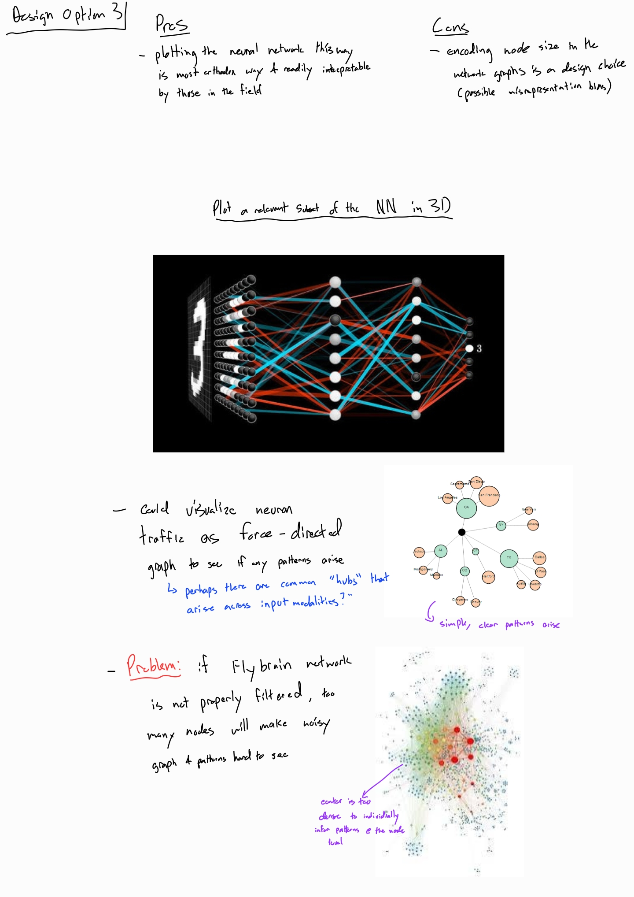
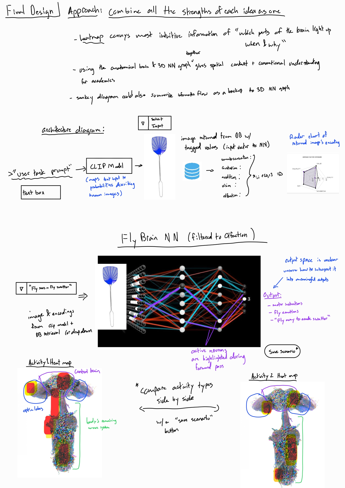

Fly Sense
Basic Info
Our final project's name is Fly Sense. It will be created by Tyler Dinh (dinh.t@wustl.edu, 525483) and Tengis Kelley (k.tengis@wustl.edu, 528529).
Background and Motivation
Recently, a complete map of the male fruit fly's brain and central nervous system was created by Google Research and released in September 2026. The release of the map made it the largest resource for understanding how a brain works. It also pairs nicely with the map of the female fruit fly's brain to understand differences between sexes. According to https://research.google/blog/a-connectomics-milestone-mapping-the-complete-male-fruit-fly-brain/, Google Research uses AI to "turn flat electron microscope images into 3D reconstructions", which has rapidly sped up the release and eventual 100% accuracy of the mapping. Then, AI sets the stage for other animals' brains to be analyzed more quickly, such as a fish's, up until the point where a human's brain could possibly be analyzed. If a human's brain is fully mapped and analyzed, it could solve a lot of long-standing research problems and likely revolutionize medicine along with a number of other fields.
With the release of the fruit fly data, many online users have been creating fun and interesting visualizations to observe the capabilities of a fly. For example, according to https://github.com/cobanov/awesome-fly (a list of fruit fly projects), a fly has been able to play video games such as Doom, Flappy Bird, Super Mario 64, and drive and play chess among other tasks. We saw these visualizations as inspiration for creating our own visualization that would hopefully work towards solving a problem in a real world, rather than just a game. Our own visualization would work to solve problems that fruit flies pose to humans.
Project Objectives
Our primary question that we plan to answer with our visualizations is "How do the output neurons activate for a fruit fly related to one of the five senses when given input stimuli?" Then, we can use the output of the fly's neural network to understand how it may act in any given situation. With the information on how a fly will act, we can better solve the problem of pesky flies, and determine ways to stop them in our lives. For example, there may be a new trap type that homeowners could deploy, based on smell, and features such as sweetness and bitterness. If it is possible to vary these predictor variables, we may be able to determine the best trap type to lure flies and remove them from inside houses.
We may also be able to understand senses of living creatures better from a medical sense by studying the input stimuli and the output activations. A fly's sense of sight could draw parallels to the sense of sight found in humans, and so studying similar inputs for both flies and humans could lead to innovations after we compare and contrast the outputs. For example, if we present a dangerous object to a fly, we can analyze how it may act, and observe which neurons and which groupings of neurons are activated. If we do the same with a human, then we may be able to hypothesize about certain neuron groups being activated and then further analyze them to see if there is any connection or not, which could help researchers with medical innovations related to sight. This may be able to generalize for each of the five main senses.
Data
We will be collecting our data from https://male-cns.janelia.org/, which is the official website for the recently released mapping of the male fruit fly's brain.
The first file that is relevant to our processing and visualization is data/body-annotations-male-cns-v1.0-minconf-0.5.feather, which provides neuron annotations for each neuron in the male fruit fly's brain. This will be used to discover the neurons that are related to each other in terms of senses, and then prune the brain for these subsets of neurons due to the computational infeasibility of the entire brain running in a browser.
The second file that is relevant to our processing and visualization is data/body-neurotransmitters-male-cns-v1.0.feather, which describes the aggregate neurotransmitter predictions for each neuron. With this file, we can observe the actual output of each neuron related to a task for a sense and then relate them to a possible real world action of the fly.
The final file that is relevant to our processing and visualization is data/connectome-weights-male-cns-v1.0-minconf-0.5.feather, which defines the full connection graph with edges and weights (connection strengths) between nodes (neurons). We can use this data to set up the full neural networks for each of the five senses for the male fruit fly.
Data Processing
Yes, we expect to need substantial data processing and cleanup for our project (Fly Sense). Because displaying the entire neural network of the fly brain is computationally infeasible in the browser, we will need to prune the neural network per sense. We will do this specifically by only targeting the nodes that are relevant to the selected sense for the fruit fly. For example, for the fruit fly's sense of "taste", we would only target input nodes relevant to tasting, hidden layer nodes relevant to tasting, and output layer nodes relevant to tasting in the neural network. As such, we will need to do this a minimum of five times, for the five senses, and possibly more, depending on the number of predictor variables we would like to encode a task as. The output of any of these neural networks will be neurotransmitter(s) used to predict if the fly will feel a certain way. For example, if a fly tastes a bitter banana, its neurotransmitter(s) would likely report that the fly would turn away or be disgusted. The output neurotransmitter(s) are different for each of the five senses, due to the five senses containing significantly different categories of input neurons.
This will require knowledge of what neurons to prune per each of the five senses we intend to study for a fruit fly. We will need to look at online documentation for the dataset for what neuron groups are related to what sense, and make sure to obtain all of those values. We will accomplish this during our research at the start of the project. Data processing will be implemented in Python, as it is a much more supported language for processing and analyzing data than JavaScript. If possible, we will use the pandas library for our data preprocessing/cleaning, and provide JavaScript with each of our pruned neural networks for visualization.
Visualization Design
Initial Ideas

- Guiding question: how does a fly respond to input based on the five senses?
- Each human sense is mapped to its fly equivalent: touch → somatosensation, taste → gustation, hearing → audition, sight → vision, smell → olfaction.
- Input: the user types in a task (e.g. "image of a house"), and a CLIP model matches it to the most likely image in an annotated database. Each image stores a score for each sense, which becomes the input to the fly brain network (e.g. neuron firing frequency in Hz).
- Alternative input: a select box with one task/object per sense, each with its own input image, so all five senses can be tested. The input still needs some way to be embedded into the network as a vector.
- Visualization idea: a force-directed graph. Rejected as the main view because it is impractical to interpret with more than 139k nodes.
- Visualization idea: a 2D/3D brain silhouette with colored regions as a heat map. It gives an intuitive understanding, but it requires neuron location information.
- Visualization idea: a Sankey diagram of sensory input → sense neurons → motor neurons → behavior commands. It shows the input-to-output flow explicitly.
- Visualization idea: a layered view of a subset of the fly brain network, zoomed in from a region of the full brain. Only a subset is shown because the original network is too large and mostly unnecessary for our focus on the five senses. Different neurons light up depending on the chosen input.
- Output: fly motor neurons, e.g. "move to banana". The output space is still unclear, and we are unsure how to turn it into meaningful outputs.
Alt. Design Option 1

- Neuron information flow vs. time, shown as a Sankey diagram from the five sense inputs, through sensory neurons and motor neurons, to motor outputs/behavior responses.
- Input: the user enters a task prompt in a text box. A CLIP model maps the text to probabilities over known images, and the best-matching image is returned from the database with its tagged values (xi ∈ [0, 1] for somatosensation, gustation, audition, vision, and olfaction). These values form the input vector to the network.
- A radar chart shows the returned image's encoding, so the user can see how much each sense contributes to the input at a glance.
- Encoding: band width encodes signal strength, and each sense gets its own color so its flow can be traced.
- Interaction: hovering highlights a path, and clicking filters to it.
- Interaction: a time slider animates the propagation of the signal, letting the user step through activity at each nth layer.
- Pros: focuses directly on input → response action in a readable format.
- Concerns: hand-tagging images for the database is time-consuming for a diverse input set, so we may have to settle for a small input space. The fly brain's spatial structure is lost, and recurrent loops in neural pathways are not shown.
Alt. Design Option 2

- Fly brain activity heat map shown over anatomical renderings of the fly's nervous system (a side view and a front view).
- Input: a dropdown of preset inputs (e.g. fruit, fly swatter). A small input set is more feasible for hand-tagged data.
- Encoding: color shows activity level (yellow = low, orange = medium, red = high), placed over the region where it occurs.
- Labeled regions (optic lobes, central brain, and the body's remaining nervous system) help viewers orient themselves in the anatomy.
- Output: the predicted action (e.g. "flies away") with a confidence level (e.g. 83%).
- Optional: a fly body simulation that acts out the output action.
- Pros: gives the most intuitive picture of how neurons fire in spatial patterns for different inputs.
- Cons: we know of no out-of-the-box way to draw the fly brain's anatomy. The "geographic" information for each neuron would need to be mapped onto an anatomical chart that we design from scratch.
Alt. Design Option 3

- Plot a relevant subset of the neural network in 3D as layers of nodes connected by edges, from the input layer to the output layer.
- Alternative: show neuron traffic as a force-directed graph to see whether patterns arise, e.g. common "hubs" shared across input modalities. On small graphs, simple, clear patterns emerge.
- Pros: plotting the network this way is the most standard approach and is easy to read for people in the field.
- Cons: encoding node size in network graphs is a design choice that can bias or misrepresent the data.
- Problem: if the fly brain network is not filtered properly, too many nodes make the graph noisy. The dense center makes it impossible to read patterns at the node level.
Final Design Sketch

- Approach: combine the strengths of each idea into one design.
- The heat map (from Option 2) conveys the most intuitive information: which parts of the brain light up, when, and why.
- Using the anatomical brain and the 3D network graph (from Option 3) together gives both spatial context and the standard view that researchers expect.
- The Sankey diagram (from Option 1) is kept as a backup that can summarize information flow in place of the 3D network graph.
- Architecture: the user's task prompt (text box) or a "select input" dropdown goes to the CLIP model. The image is then retrieved from the database with its tagged per-sense values (the input vector), and a radar chart shows that encoding.
- The fly brain network is filtered to one sense (e.g. olfaction), with the chosen input (e.g. "Fly sees a fly swatter") and its image shown next to the input layer.
- Active neurons are highlighted during the forward pass, so the user can follow which pathways the input triggers.
- Output: motor instructions, fly emotions, and a readable action (e.g. "fly away to evade swatter"). How to interpret the output space is still an open question.
- Activity heat maps for two scenarios can be compared side by side using a "Save Scenario" button.
Must-Have Features
First, we must have five senses that we analyze in total, as our entire project is about senses of a fly. Specifically, we need visualizations of the male fly's brain for Sight, Hearing, Smell, Taste, and Touch, with at least one task/network per sense. The visualization of each task should be a neural network of the appropriate nodes and edges for the input, hidden, and output layers rendered in the library three.js, so that the visualizations can be visualized in 3D. As the user starts a task for a fly, they should see the edges activating between different nodes in real time and in 3D, and then be able to see what the predicted state / feelings of the fly are after the neural network has successfully completed a forward pass with the predictor variables. The user should also be able to interactively select tasks per sense, which would change the encoded input into the neural network, and as a result also change how the fly may feel about the situation. We should likely have a way to compare and contrast different tasks and their predicted outputs for what the male fruit fly would do in the real world.
Optional Features
We'd like to have a diverse set of tasks per each of our five senses that will be analyzed. For example, a taste task could be "eat a banana", which we would then manually encode into groups of input neuron activations and watch as the values propagate to the output layer of neurons. However, since each of these tasks needs to be manually encoded and thought about (ex: which neurons / groups to pick) on the data processing side of the project, it would be nice to have a more representative set of tasks to observe a fruit fly's reactions, but just one task per sense would be enough to satisfy the base requirements we propose. The dream feature would be one that can take any user input and automatically encode it in the correct format to then pass to the given input layer neurons.
Another feature that would be nice to have is if the user could drag around the 3D plane where the neural network visualization is. This would let the user explore the neural network for each sense more. In addition, it would be nice to have a feature where the user can hover over nodes in the same plane to receive a tooltip of what their characteristics are. For example, one neuron could be associated with the left eye, while another neuron could be associated with the right eye. There are many relationships that a user would be able to look at between the nodes in the neural network if this were to be implemented. This optional feature would be one of the first to be implemented, as it shows more than just the output of the network to any user who visits the website.
Project Schedule
First, we'll be working in a shared GitHub repo with standard git workflows. The repository can be located at https://github.com/tylerdinh/cse4507-final-project. We will communicate proactively and early to one another over text and/or email about any incoming schedule conflicts and work around them. We plan to work on the assignment in person at minimum every Friday for around an hour, in class during the allotted times, and then offline for as much time as is needed.
Since the project is due December 7th, we can split this up into multiple broad week-by-week deadlines. Both members of our group are equally skilled in all categories, so we'll divide and triage specific tasks on a GitHub Projects hosted Kanban as we discuss what needs to be done for the given week. The week starting on Oct. 26, we'll define specifically what tasks are to be studied for each of the five senses, and then start to parse the publicly available datasets as described above in Python to create a subgraph out of the full graph for one of these tasks. The week starting on Nov. 2, we'll finish a functional project prototype of one of these neural networks, by encoding the task into the input layer of neurons, determining the hidden layer(s), and determining the output layer of neurons, which will output a signal about the fly that can then be shown to the user. We will also work on our process book up to the current point to prepare for and work on the submission to the project's Milestone 1. Then, for the week starting on Nov. 9, we will start implementing the visualizations for the four remaining senses, by reusing the same patterns as described for the first visualization. For the week starting on Nov. 16, we will work on our process book and continue to finish up any visualization that has not already been completed, and if possible try and get some of our optional features done as stretch goals. The most important optional feature would be to handle any user query as an encoded input to one of our networks' input layers, so we will try to implement this along with some of the needed interactive features in this proposal. We will ensure that our submission is good for Milestone 2 during this week as well. For the week starting on Nov. 23, we will clear up any issues after the in-class user study, implement possibly another optional feature, and prepare for and edit our presentations (both video and in-person). We will clean up any loose ends, including documentation of our code, process book, README.md, and then finally publish our work on GitHub Pages.